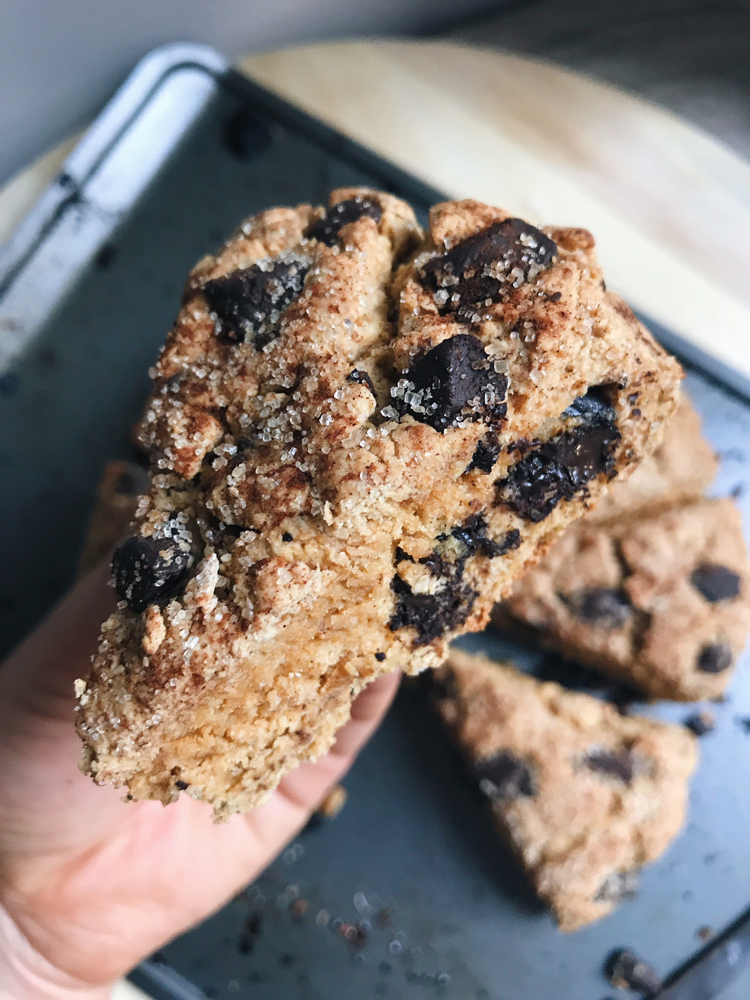
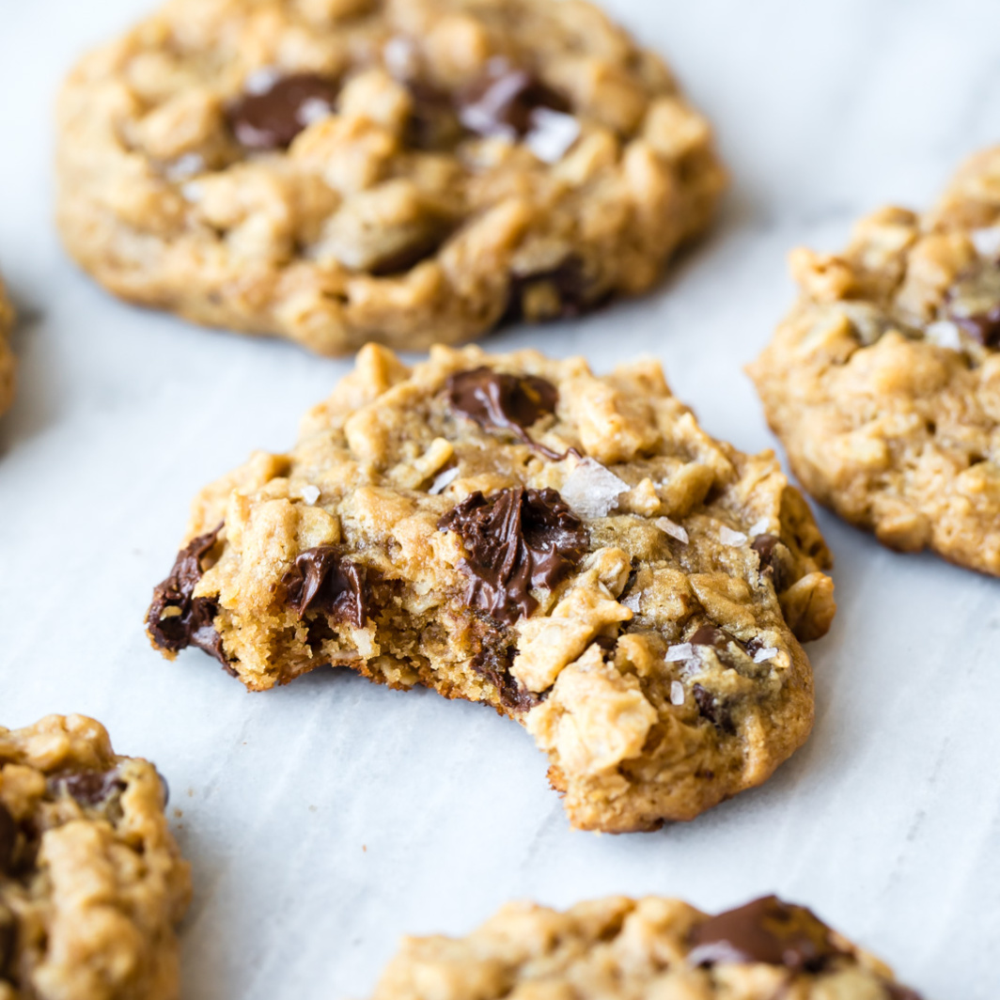
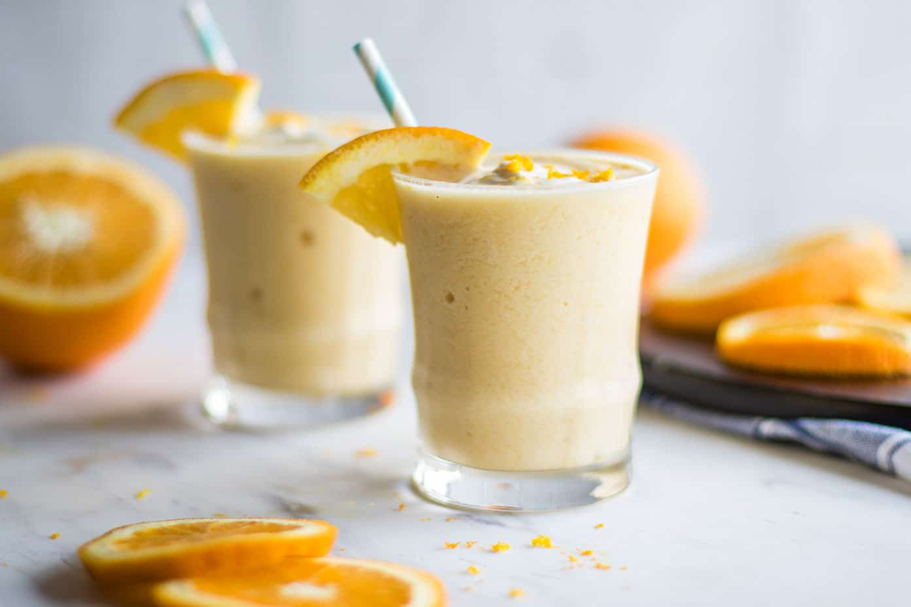

Healthy Recipes
As a vegetarian who dislikes many vegetables, finding healthy foods and desserts is often difficult. I have discovered healthy snacks and desserts that are low in sugar and fat. I use many food substitutes that can replaced common ingredients to make recipes healthier.

Substitute the chocolate chips with Lily's Baking Chips (no sugar added).

I substitute the natural creamy peanut butter with Jiff Reduced Fat Peanut Butter. I also substitute the dark brown sugar with Swerve Brown Sugar and the chocolate chips with Lily's Baking Chips (no sugar added).

This is a breakfast favorite in my home!